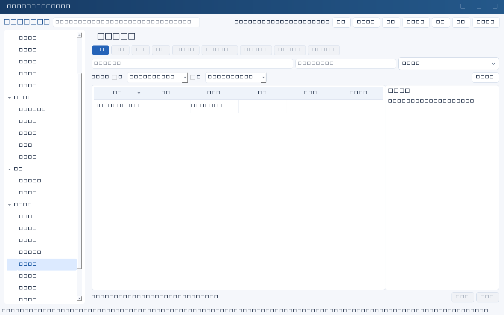
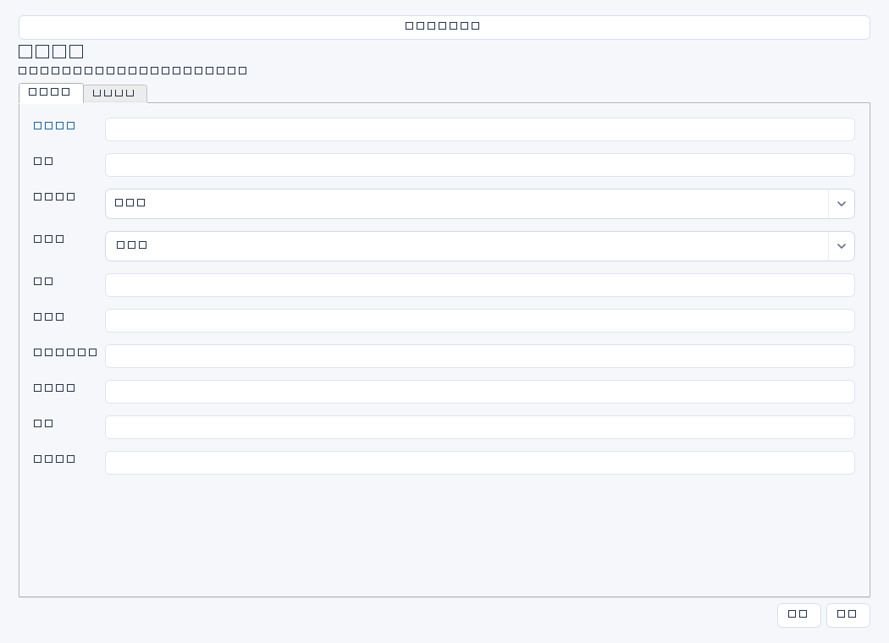

按年度和管理对象记录预算、已发生、已承诺未发生及预计新增，支持IT费用预测与财务对账。输入应有预算批复、财务账和合同/采购承诺依据。


操作步骤与资料获取
- 取得年度预算批复及口径，向财务获取截至同一日期的已发生金额，向采购核对已签未发生的承诺。
- 新增费用记录并关联项目、系统或合同等实际对象，明确年度、负责人和币种。
- 把三类金额互斥划分：已发生、已承诺未发生、尚未承诺但预计新增；核对税率、期间和币种，避免重复计数。
- 人工计算预测总额＝已发生＋已承诺未发生＋预计新增，与预算比较；在财务确认和证据记录差异及确认时间，软件字段不自动完成财务核算。
字段逐项说明
| 操作 / 字段 | 详细说明 |
|---|---|
| 名称 | 费用主题，强制非空；建议年度＋项目/服务＋费用范围。 |
| 年度 | 预算年度，如2026；文本字段，不强制四位年份，应统一财年口径。 |
| 关联ID | 对应项目、系统、合同等业务记录；非空时强制引用存在且未归档记录。 |
| 负责人 | 预算跟踪和费用预测责任人姓名，不等同财务审批人。 |
| 预算 | 已批准预算；非空时强制非负十进制纯数字，审批调整需留依据。 |
| 已发生 | 按约定财务口径已发生的金额；非空时强制非负十进制纯数字，不能混同已付款。 |
| 已承诺未发生 | 已签合同或采购承诺中尚未发生的部分；非空时强制非负十进制纯数字，不重复包含已发生金额。 |
| 预计新增 | 尚未形成承诺但预计本期新增的费用；非空时强制非负十进制纯数字，说明估算依据。 |
| 币种 | 建议填CNY等统一代码；自由文本，系统不会自动折算多币种。 |
| 财务确认 | 记录对账人、截至日期、含税/不含税及计提口径、差异处理结果；文本填写不代表完成支付或审批。 |
| 证据 | 预算批复、财务明细、合同承诺表和估算依据的版本、日期与受控位置。 |


示例（仅演示）
| 操作 / 字段 | 详细说明 |
|---|---|
| 名称 | 2026 ERP连续性建设费用 |
| 年度 | 2026 |
| 关联ID | |
| 负责人 | 李明 |
| 预算 | 120000 |
| 已发生 | 30000 |
| 已承诺未发生 | 60000 |
| 预计新增 | 15000 |
| 币种 | CNY |
| 财务确认 | 2026-04-30与财务王芳确认含税管理口径；预测总额105000元，较预算余15000元 |
| 证据 | 预算批复YS2026-09、4月费用明细、采购承诺表V2；受控资料库/预算/ERP |
形成闭环
- 月度或阶段结算后更新各金额，同时调整承诺未发生以免与已发生重复。
- 超预算或预测偏差须取得真实管理决策，记录调整依据；不得为看起来平衡而修改已发生。
- 年度结束保留最终对账版本和财务确认材料；无状态字段，不必虚构关账按钮。
常见误区与边界
- 将合同全额填入已承诺未发生，同时把合同已执行部分填入已发生，造成双算。
- 不同币种或税口径直接相加，预测失真。
- 金额填千分位、万元或Excel公式会被拒绝；必须纯数字文本。